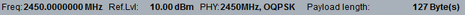

Parameters and Settings
The most important settings of the "LR-WPAN Multi-Evaluation Measurement" are displayed in the measurement dialog.

All settings are defined via softkeys and hotkeys, using the "LR-WPAN Multi-Evaluation Configuration" dialog. The configuration dialog of multi-evaluation provides parameters for the following tasks:
Contents